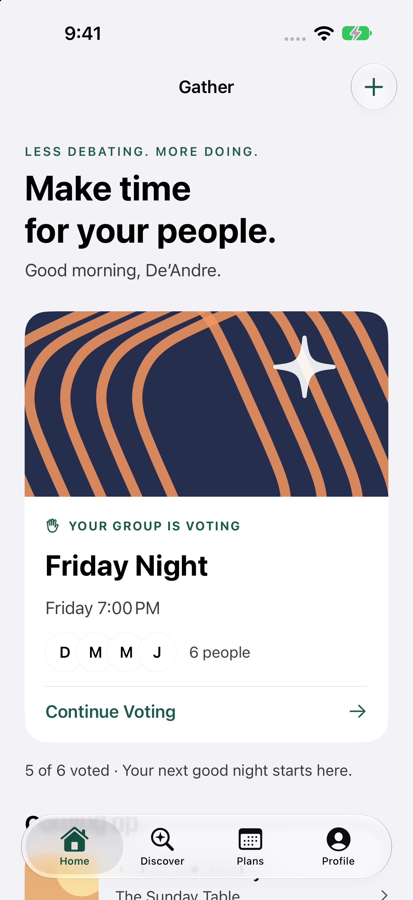
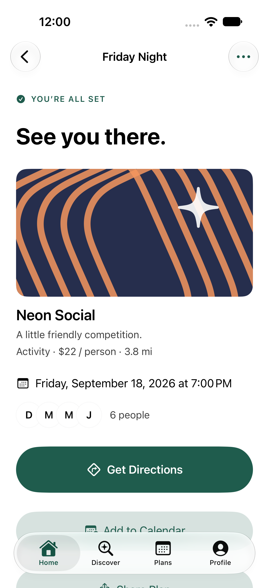
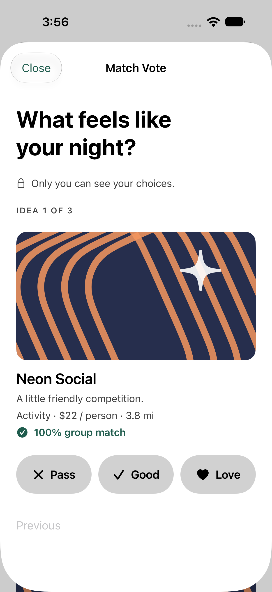

Scattered context
Ideas, timing, and budgets live in different messages. The group has to reconstruct the plan.
INDEPENDENT CONCEPT / NATIVE iOS / 2026
01 — GATHERAn iOS concept that helps friends choose a plan
with everyone’s needs in mind and room for an honest vote.
Product direction by De’Andre Perry View contribution ↗
MAKE TIME FOR YOUR PEOPLE
From “what should we do?”
to “see you there.”


01 / THE OPPORTUNITY
A group chat is great for conversation. It’s a difficult place to keep track of a decision.
Gather explores how a single, focused experience can bring people’s interests, practical constraints, and honest choices together. The ambition is simple: help a group reach a plan they can act on.
Independent product concept. Designed from a product brief; not a commissioned project or a user-research study.
Independent concept
Product & UI design
Native iOS · SwiftUI
De’Andre Perry
THE DESIGN PREMISE
Ideas, timing, and budgets live in different messages. The group has to reconstruct the plan.
“Anywhere works” can leave real requirements out of the decision.
More suggestions don’t necessarily create agreement. The group needs a way to choose.
These are the starting hypotheses from the brief, not findings from interviews. They define what a future usability study should test.
THE DESIGN QUESTION
02 / THE EXPERIENCE
One continuous path from an open question to a shared plan. Explore the actual app screens below.
01 / HOME
The active plan leads the page. Its status and Continue Voting action make the next step clear.
Establish hierarchy through content and type before adding decoration.
03 / THE DECISIONS
The interface supports the social dynamics of making a plan, as well as the practical steps.
Home prioritizes the active plan. The lobby places Start Voting before the recommendation list, so browsing is available without becoming a prerequisite.
Trade-off: less content up front, more direction.Love, Good, and Pass express different levels of interest. Aggregate results appear only after all ballots are complete; individual choices stay out of the interface.
Trade-off: wait for everyone before showing the result.Preferences influence ranking. Requirements determine eligibility. If required accessibility information is missing, the option is excluded rather than assumed suitable.
Trade-off: a smaller set of ideas can be the right answer.
THE DEFINING INTERACTION
The prompt asks how the evening feels, not which venue deserves a rating. One idea at a time keeps the decision focused.
The group-match score reflects shared preferences in the demo. It does not verify a venue’s accessibility or suitability.
04 / VISUAL LANGUAGE
The identity lives in the content. Familiar iOS controls give the experience its structure.
The app icon suggests convergence: separate paths forming one shared moment.
Semantic iOS text styles establish hierarchy and scale with Dynamic Type. Short, conversational copy keeps the product approachable.
02 / TYPOGRAPHYForest marks actions and meaningful emphasis. Warm illustration colors add energy. System surfaces and labels adapt to appearance.
24-point page gutters, generous section spacing, and restrained image corners. Grouping does more work than extra borders.
04 / RHYTHMType examples describe the app’s semantic hierarchy; their web rendering is illustrative. The palette samples the light accent and artwork. The app’s separate dark accent is pale green (#94D1AD); surfaces and labels use system colors.
A COHERENT EXPERIENCE, FROM IDEA TO OUTING
05 / DUO DESIGN EXPLORATION
A larger canvas should reveal useful context while keeping the next step familiar. An adaptive direction for Gather on iPhone Duo.
Interactive layout study · Not a Duo Simulator capture
The night is coming together.
Fictional plans · Layout exploration
The plan list and selected plan sit together when space allows. On narrow previews, they stack. More context becomes visible without adding tasks or exposing individual votes.
The selected plan stays selected across layouts. A native implementation must also preserve the active vote, edits, and navigation state when moving between displays.
The extra pane brings the plan list into view. The same information hierarchy and next action remain available in the compact experience.
Keep meaningful content out of reserved regions. Prefer system split views and let iOS place navigation and toolbars for the current pose.
What this study demonstrates
Content hierarchy, plan-selection continuity, and a fold-aware composition. Switch layouts and select a plan to explore.
What remains to validate
Actual Duo dimensions, system vertical controls, camera regions, folding transitions, Dynamic Type, and assistive technology. The band is a schematic reserved region; system navigation chrome is intentionally omitted from these content studies.
06 / INCLUSION
Accessibility shaped both the decision model and the way people move through it.
Light appearance · iPhone 18 Pro
The voting-to-confirmation flow was exercised at the largest accessibility text size, including on a smaller iPhone 17e. Primary labels get the full button width as text grows.
Vote choices combine labels and symbols. Selected values are exposed to assistive technology. Decorative imagery is excluded from the reading order.
Individual requirements are not shown in participant summaries or included in shared invitations. The group sees eligible ideas, not a list of someone’s personal needs.
NATIVE BY DESIGN
Gather’s personality comes from its voice and artwork. Navigation, text, and controls build on iOS conventions.
Four labeled system tabs provide stable destinations. Navigation stacks handle detail screens; a dismissible sheet contains voting. The system supplies the tab bar’s Liquid Glass appearance.
HIG: Materials ↗Semantic text styles scale with system settings. Voting responses can stack vertically, and primary labels receive the full available width at accessibility sizes.
HIG: Typography ↗Voting controls have a minimum 44-point label height. Words and symbols carry meaning together. People can revisit choices before submitting; reduced-motion settings disable the voting transition animation.
Apple: Touch and interaction guidance ↗Review scope: native source, Simulator captures, and the recorded QA results, checked against Apple guidance on September 17, 2026. VoiceOver, Switch Control, Reduce Transparency, landscape, and physical-device behavior still need manual validation. The custom accent has light and dark variants; dedicated increased-contrast variants remain a refinement to validate. This is a documented alignment review, not an Apple certification.
07 / REFINEMENT
The running app exposed details that static compositions couldn’t. These changes are documented in the implementation and QA record.
Strengthened secondary-text contrast after the native accessibility audit.
Supporting details remain readable without competing with the main action.
Moved Start Voting above the recommendation list.
The next step is available before a long scroll.
Removed the competing icon from primary buttons at accessibility text sizes.
The label can reflow across the available width.
Returned the plan to its heading when the state changes.
The result of the action is immediately understandable.
08 / OUTCOME & REFLECTION
The outcome is a functional native concept that carries a group decision all the way through to a plan.
The core journey runs offline with sample participants and venues. Creation, discovery, preferences, saved activities, and final-plan actions extend the experience beyond the central demo.
The prototype connects private choices, aggregate consensus, and final-plan actions. Validation: 12 unit tests and 4 UI tests passed, plus two smaller-device journey runs. Recorded September 15, 2026.
This is implementation evidence, not a measure of usability or product impact. Manual assistive-technology and permission testing remain part of release QA.
I defined the product brief and directed the design. Codex supported development, procedural artwork, sample content, and technical testing.
Independent portfolio concept with fictional venues, people, and accessibility metadata. Invitations and votes are local to the demo; live collaboration, real venue providers, widgets, and Live Activities are future work.
The current build is not presented as an App Store release or as Apple-affiliated work.
Original iPhone app screens are unretouched Simulator captures. The Duo section is an interactive web layout proposal. Native navigation and materials are supplied by SwiftUI. Automated validation is described in the project’s QA report.
GATHER